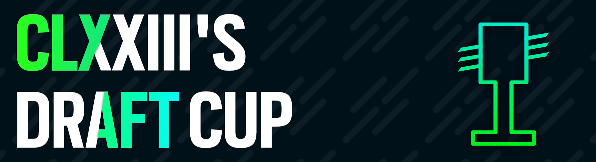

Welcome to CLXXIII's Draft Cup! A draft cup being held in the 85k - 300k range. The gimmick of this tournament being that you sign up as a single player, and the top 128 will be drafted on to teams to play the bracket stages.

Quick Rules Index
- Double Picking: No (NM excluded)
- Double Banning: No (NM excluded)
- Ban Order: 1221
- Roll Winner: Chooses Pick or Ban Order (pick or ban; first or second)
- Bans lost after: 5 minutes
- Forfeit after: 10 minutes
- EZ Multiplier: 1.7x
- Freemod Rules: 1 player with a mod.
General Rules
- Players will sign up individually, and be drafted onto teams of four to compete in a 2v2 double elimination bracket.
- This tournament is for players in the #85,000 - #300,000 rank range.
- All players must be within the rank range before the end of the registration period.
- Screening will take place in during the qualifier week. Players can be screened for a variety of reasons, from evidence of cheating, to a previous history of toxicity, to the tournament running better without specific players.
- All players from each team must be in the discord server.
- Your nickname in the discord must be changed to your osu! username if it isn't already.
- All times posted will be in the UTC Timezone. A clock is available on the main sheet to use if you need it.
- All staff except for Streamers and Commentators are forbidden from participating in the tournament.
Qualifiers
- Players will be notified of their match 15 minutes from the start of the match.
- Players will be expected to join on time, but there will be a 5 minute buffer for being late, and a 10 minute buffer if you let the ref know you're going to be late.
- Starting from NM1, players will play each map once in the qualifier pool.
- If a player disconnects, they will have a chance to replay the maps they missed at the end of the lobby.
- After each map has been played, the player's map rating will be calculated using the following formula:
- Each player's map ratings will be added together to get their final rating, and players will be sorted into tiers for the drafting phase.

Drafting
- Using each player's final rating, the top 128 players will be sorted into four tiers.
- The top 32 players will become captains.
- The top 64 players will become Tier 2
- The top 96 players will become Tier 3
- The top 128 players will become Tier 4
- Each captain will be assigned a team with the same name as their qualifier rank. (eg. Rank 1 = Team 1 etc.)
- Starting with Team 32, the captain of each team will choose a player to join their team from Tier 2.
- Tier 2 picks will go in descending order, starting with Team 32 and ending with Team 1
- After all Tier 2 players have been picked, Team 1 takes their choice of a player from Tier 3.
- Tier 3 picks will go in ascending order, starting with Team 1 and ending with Team 32
- After all Tier 3 players have been picked, Team 32 takes their choice of a player from Tier 4.
- Tier 4 picks will go in descending order, starting with Team 32 and ending with Team 1
- The draft phase will have been completed, and captains may now rename their team if they so choose.
Match Procedure
- Teams will be notified of the match at least 15 minutes before the start of their match. Captains are expected to be responsive to the ping.
- At least two players from each team must be in the lobby by the scheduled match time. After 5 minutes, your team loses their ban(s). After 10 minutes, they will be forfeited.
- Referee's are less likely to be sympathetic to teams that are unresponsive after the first ping.
- Both teams are welcome to pick warmups, as long as they're drain time is no longer than 4:00.
- Captains will roll before the start of each match. The highest roll gets to choose the order of either picking or banning (pick or ban; first or second). Loser of the roll will order the unchosen one. Depending on what stage the tourney is at, each player will get 1 or 2 bans. Ban order will be 1221.
- Teams may not ban twice from the same modpool (excluding NM) and Teams may not pick from the same modpool twice in a row (excluding NM).
- Each team will have 2 minutes to pick or ban each map.
- Players must ready up within 2 minutes of the map pick.
- The team with the higher score at the end of the map gets a point.
- EZ mod scores will be multiplied by 1.7x
- For Freemod maps, teams are required to have at least 1 player with a mod, including HD, HR, FL or EZ.
- If both players are in match point, the tiebreaker map will be played.
- In the event of a disconnect, the match will be aborted if in the first 30 seconds, otherwise a screenshot of the final score must be provided to the referee. If no such screenshot can be produced, their score will not count.
Round Format
- Qualifiers: One Playthrough: 4NM, 2HD, 2HR, 2DT
- Round of 32: BO9: 5NM, 2HD, 2HR, 2DT, 2FM, 1TB [1 BAN]
- Round of 16: BO9: 5NM, 2HD, 2HR, 3DT, 3FM, 1TB [1 BAN]
- Quarterfinals: BO11: 5NM, 3HD, 3HR, 3DT, 3FM, 1TB [1 BAN]
- Semifinals: BO11: 6NM, 3HD, 3HR, 3DT, 3FM, 1TB [2 BAN]
- Finals: BO13: 6NM, 3HD, 3HR, 4DT, 3FM, 1TB [2 BAN]
- Grand Finals: BO13: 6NM, 3HD, 3HR, 4DT, 3FM, 1TB [2 BAN]

- End of Registration: December 10th
- Qualifier Lobbies: December 17th - December 20th
- Scouting Phase + Holiday Break: December 20th - January 2nd
- Draft Event: January 2nd
- Round of 32: January 7th - January 9th
- Round of 16: January 14th - January 16th
- Quarterfinals: January 21st - January 23td
- Semifinals: January 28th - January 30th
- Finals: February 4th - February 6th
- Grand Finals: February 11th - February 13th

-
These are the current prizes, they will change according to the number of donations!
- 1st Place: 6 months + role in the discord
- 2nd Place: 2 months + role in the discord
- 3rd Place: 1 month + Role in the discord